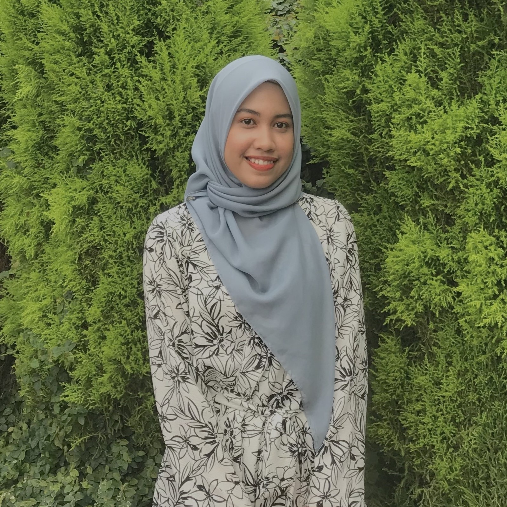

|  | MY BIODATA |
|---|---|
|
|
| MY CAREER OBJECTIVES | |
|
Seeking a position as an Account Executive, Private Banker, or any other relevant position that matches my qualifications, as well as opportunities to expand my skills and knowledge. |
|
| ABOUT ME | |
|
My full name is Wan Suriati Binti Wan Omar. Most people refer to me by my nickname, 'Sue.' I live in Kg Telaga Bata, Tumpat, which is located near the Malaysia-Thailand border. I am a full-time student at University Technology Mara Kelantan in Kota Bharu, majoring in Bachelor of Business Administration (Hons.) Finance. During my studies, I spent most of my free time travelling with family and friends. I enjoy making memories with them and would like to make the journey more at this young age. I prefer taking a road trip because I can enjoy the scenery and nature. In addition, whenever I have free time, I help my family's business. In terms of my personality, I am generally friendly with most people and prefer to make new friends by approaching them first. As a result, I can easily blend in wherever I go, and I really enjoy this type of lifestyle. | |